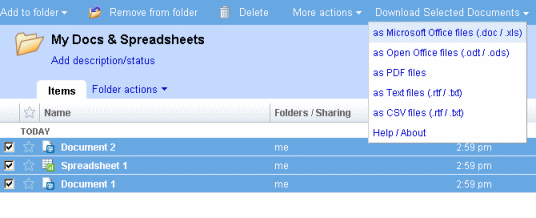
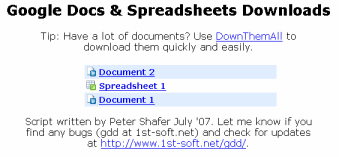

Google Docs Download
Users of Google's document and spreadsheet web service can easily access and manage their important documents in one central location. They still would like to be able to back up and archive their files on their own systems. Unfortunately that isn't so easy. You would have to open each document and choose to export them individually and becomes quite time consuming if you have more than a handful of documents.
The Google Download Script was written to help streamline this process when combined with a download manager like DownThemAll.
How it works
Google Doc Download can be installed as a Grease Monkey script or a Firefox extension. Once installed here is what you see on your google documents control panel.

Just navigate to the document list that you wish to download. Selected the documents you want to download by clicking their checkboxes or click the select: all link at the bottom of the page. Click the drop down menu on the right side of the page that reads "Download Your Documents" and select a format. You can also choose to select all of your documents without selecting them by checking the "All Docs" option at the top of the drop-down. A new window will open and you now have a list of links to download all of the documents that you selected.

Now use DownThemAll to mass download your
documents! You have now mass downloaded your documents from google, can now archive them to the medium of your choosing and place
it under your mattress so you can sleep at night knowing that if google exploded while you were sleeping you would still have your files when
you wake up.


Download it 
Download now! (Click here to subscribe to the update feed)
Updates
June 15th, 2008: Support for downloading pdfs has been integrated. Please let me know if you find any bugs with it.
June 14th, 2008: There was a minor incompatibility between the script and the new version of greasemonkey which has been fixed. Support for backing up your uploaded PDFs will be added soon.
May 24th, 2008: It has been found that GDD experiences problems when Google Gears is enabled. A fix is being has been developed.
April 9th, 2008: The script has been updated to allow powerpoint file downloads. Also, the "download all" option has been removed due to a change in how document feeds are accessed.
March 1st, 2008: Problems caused by recent Google Docs updates have been fixed. A new option to select all documents for download has also been added. Please update your copy of GDD and give it a test drive.
December 12th, 2007: A compatibility bug has been fixed.
September 25th, 2007: GDD has been updated to reflect new updates to Google Docs. Download links work correctly again and support for presentations has been added.
July 31st, 2007: Fixed a bug that prevents you from clicking certain links. I've also tweaked where the drop down menu appears for Google Apps and Google Docs implementations that still use the old blue toolbar at the top of the page. Thanks Attila!
July 27th, 2007: Support for "Google Apps for your domain" was added. Thanks for the feedback James!
July 8th, 2007: I have completely re-written the script work with the new updates for Google Docs.
Bugs & Contact
Remember to scroll to the bottom of your doc list if you have more than 50 documents. Google streams this list as you scroll down. If you wish to download all of your documents without having to scroll, turn on the "All Docs" in the GDD drop-down menu.
Please Note: Certain file formats are not supported for either documents or spreadsheets. Whenever this is the case you will download the next closest format instead. For instance, the text and CSV formats are supported for spreadsheets, but not for documents. In these cases you will download documents in RTF format instead.
This script can become temperamental depending on how Google decides to upgrade their code. So if the page html or javascript changes significantly then this script is liable to cease functioning. Chances are I will find out pretty quickly since I use the script myself but you can always drop me a line at gdd at 1st-soft.net.
This is also my first Grease Monkey script, so let me know if I messed up something in the gm configuration as well.
Google Doc Download was written by Peter Shafer, student developer, in April 2007, (updated in July 2007). Contact: gdd at 1st-soft.net
Thanks to F.D. Cleary for helping me debug the script. 
Emoticons originate from the Something Awful forums. 
License

This software is licensed under the CC-GNU GPL.